MASTER Portal · Analysis

MASTER · 02 / 07
給三類客戶看 — 車隊老闆 / IT 經理 / 司機主管。每個 portal 頁面獨立 1 張 slide,看到畫面 + 知道做什麼。
Master 像「車隊總代理」的後台。Fleet 像「車隊老闆」的後台。
Presentation 中,這 5 題會在前 5 分鐘冒出來。先把答案準備好。
| 經銷商 / 神達內部 | Master Portal — 看到所有客戶的設備池 |
| 車隊老闆 / 司機主管 | Fleet Portal — 只看到自己車隊 |
| 同時管多個車隊的 IT | 兩個都要 — Master 派發、Fleet 運營 |
| 經銷商 | Master Portal → Diagnostics — 看跨車隊哪幾台有問題 |
| 車隊客戶 | Fleet Portal → Devices — 看自己車隊各台 ADAS / DMS 健康 |
經銷商 / 神達內部用 — 每頁 1 張 slide,看到畫面 + 知道做什麼。
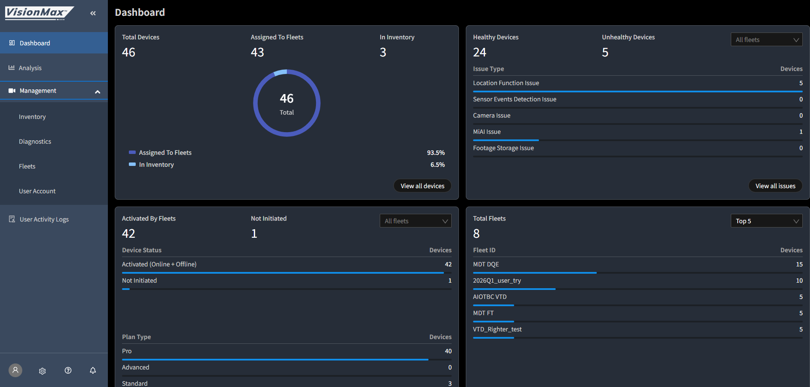
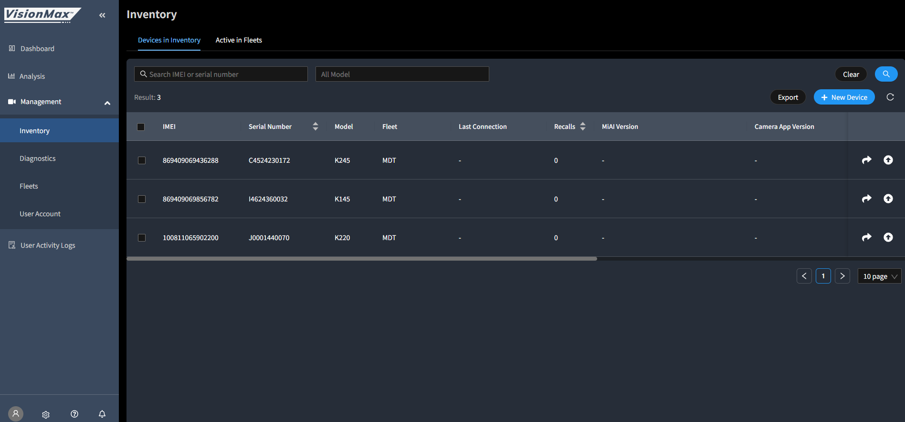

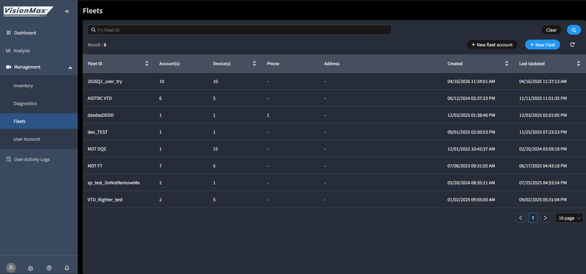


車隊運營者用 — 每頁 1 張 slide,加上開頭一張 6 大功能群組地圖。
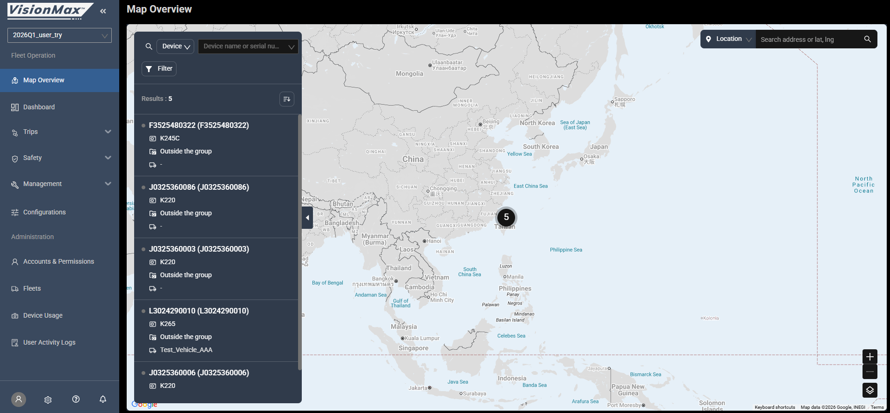
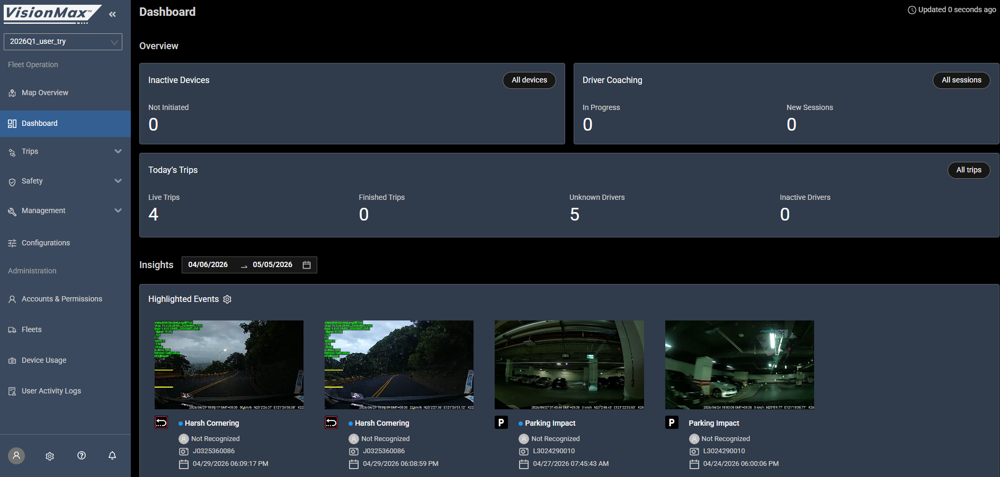
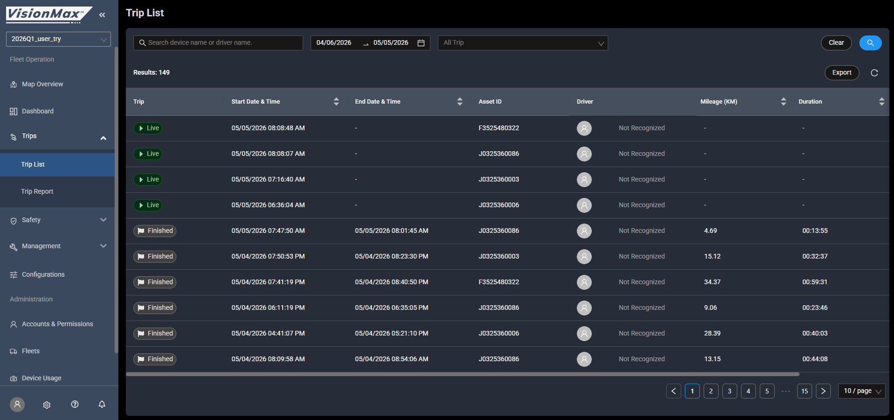

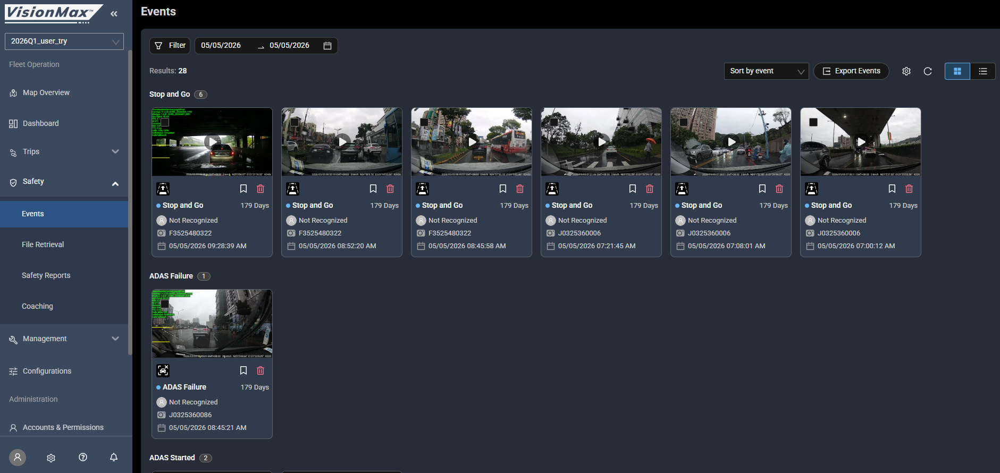

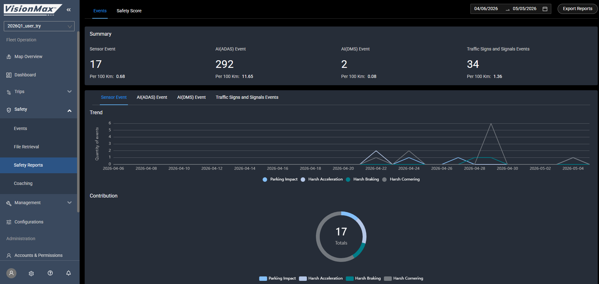
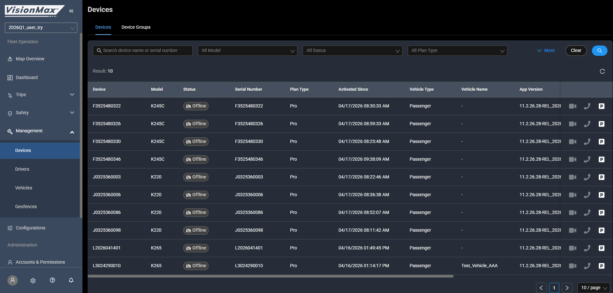

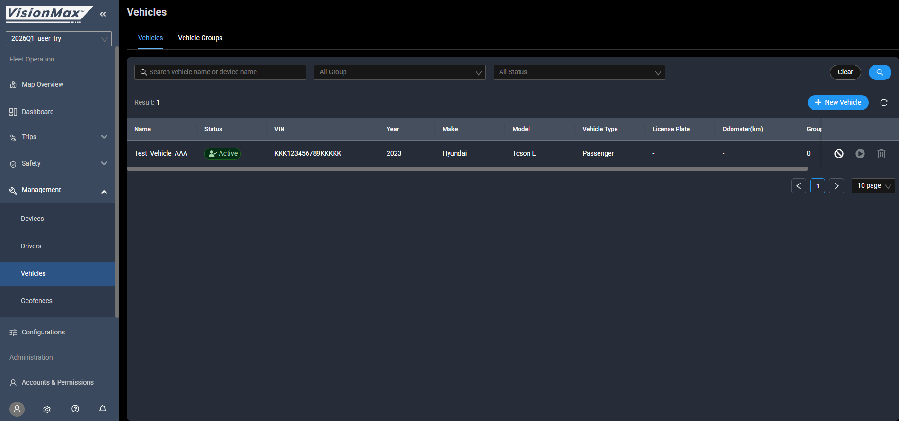
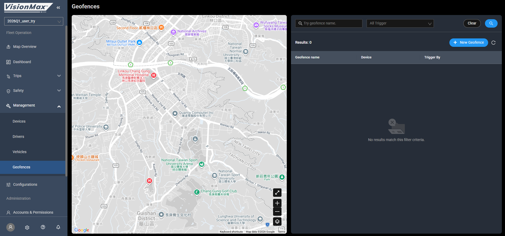
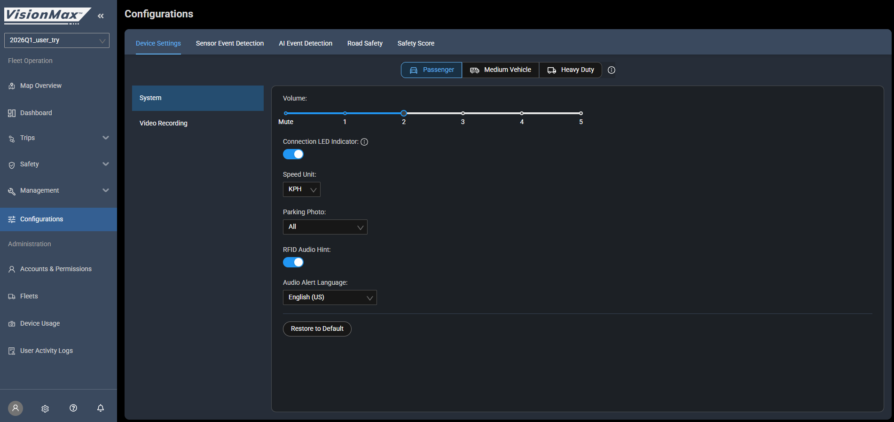
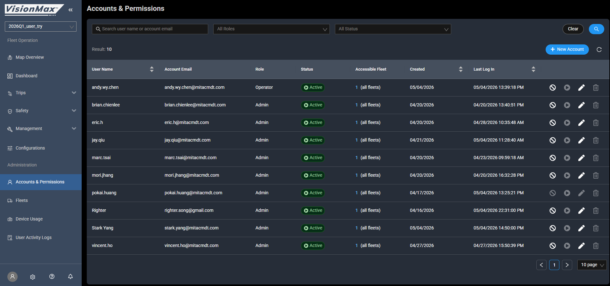


客戶坐下來,你 5 分鐘走完一套。三類客戶各有自己的路徑、節奏、收尾問題。
| 客戶想做什麼 | Portal | 看哪一頁 |
|---|---|---|
| 看今天車隊狀態 | Fleet | Dashboard |
| 找特定司機的行程 | Fleet | Trips > Trip List(搜尋) |
| 調某個事故影片 | Fleet | Trip Detail / Event Detail |
| 看誰開太快 | Fleet | Safety > Events(篩 Speed Sign Violation) |
| 訓練問題司機 | Fleet | Safety > Coaching |
| 改車隊觸發門檻 | Fleet | Configurations |
| 加新司機 | Fleet | Management > Drivers |
| 加管理員帳號 | Fleet | Administration > A&P |
| 派發新設備給客戶 | Master | Management > Inventory |
| 看跨車隊有幾台壞了 | Master | Management > Diagnostics |
| 加新車隊客戶 | Master | Management > Fleets |
| 看哪些經銷商員工進來看了 | Master | User Activity Logs |